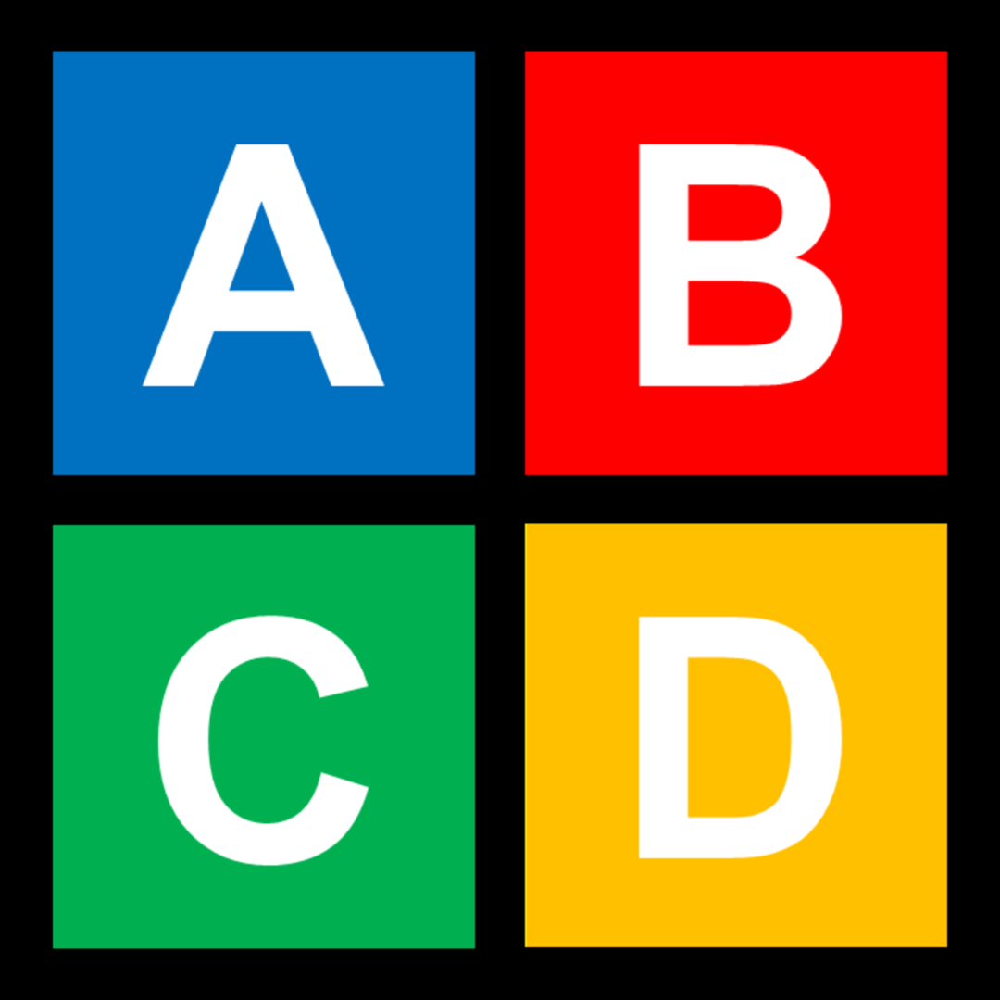

Eisenhower Organizer
Organização leve por importância e urgência.
- Crie, classifique e conclua tarefas em quatro quadrantes.
- Use calendário, visão por datas e lista global de tarefas.
- Exporte e importe dados em formatos úteis para rotina e estudos.
- Trabalhe offline com armazenamento local do fluxo principal.